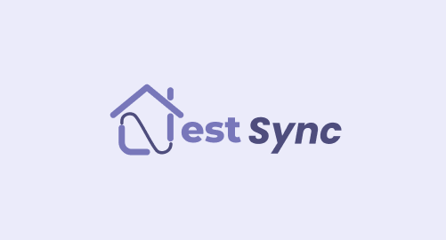
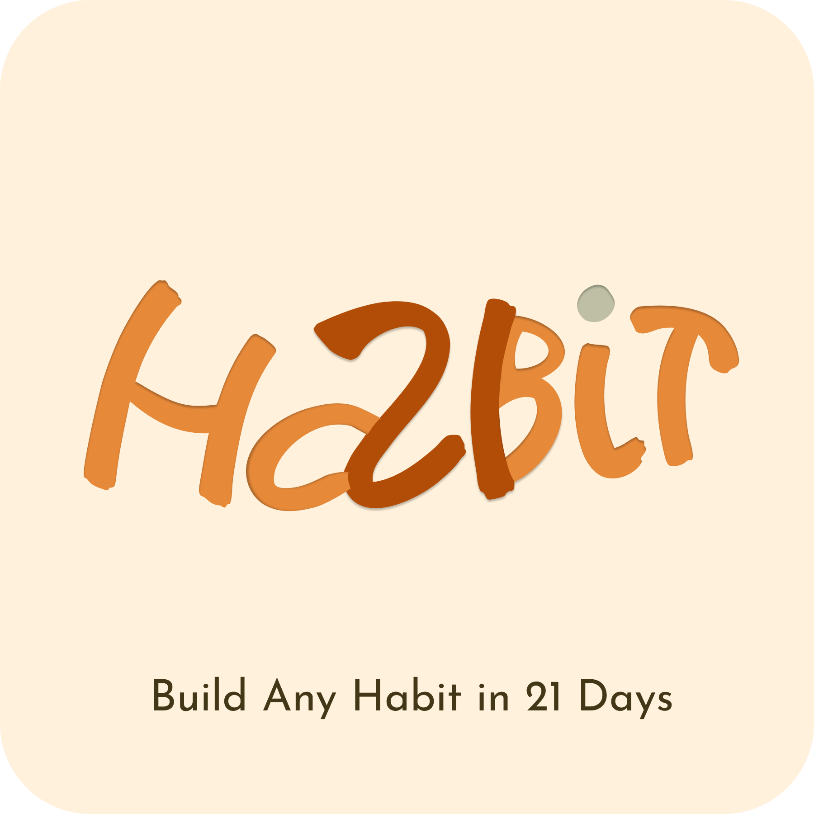
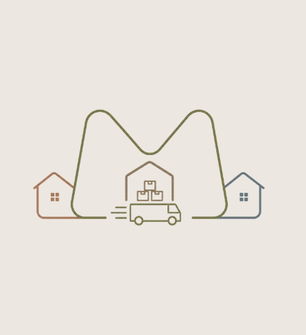

Design skills
Product Design · Motion Design · Interaction Design · Visual Design · Wireframing · Prototyping · Design Systems · Design Sprints · Identity Design
I design digital products that feel clear, useful and human.
My process starts with understanding people and the everyday friction behind a problem. I turn those insights into thoughtful flows, visual systems and interactions that make the experience easier to understand and enjoyable to use.
I enjoy working across product design, UX research, interaction, motion and prototyping—moving between big-picture thinking and the small details that give a product personality.
My edge Product thinking with visual storytelling
How I work Research → decisions → working prototype
What I bring UX craft + code-aware execution + motion
From shared homes to personal habits—each project starts with a real human friction.
View Amaravathi Brand & Packaging Portfolio (PDF)

I turned the hidden coordination work of shared homes into one calm system—then used research to remove features roommates did not actually need.
Research-led product thinking
I reframed habit tracking around anticipation instead of pressure, designing a 21-day journey where a self-chosen reward makes progress feel personal.
Behavior design + prototyping
I connected resale, temporary storage and local delivery into one service—and built the key flows as a working experience, not only static screens.
Service design + working demoI work across the product-design process—from finding the right problem to communicating the final experience through prototypes and motion.
Product Design · Motion Design · Interaction Design · Visual Design · Wireframing · Prototyping · Design Systems · Design Sprints · Identity Design
User Research · User Personas · Journey Mapping · Empathy Mapping · Affinity Diagrams · Usability Testing · A/B Testing · Usability Heuristics · Ideation Techniques
Figma · Sketch · Adobe XD · InVision · Balsamiq · Miro · Optimal Workshop · UsabilityHub · UserTesting
Framer · Webflow · Principle · Figma Motion · After Effects · Photoshop · Adobe Creative Suite · Interactive Prototypes
HTML · CSS · JavaScript · Responsive Design · Gestalt Principles · Typography · Color Theory · Iconography
Figma Make · Lovable · Base44 · ChatGPT · Claude · Gemini · Adobe Firefly · Midjourney · Runway · Uizard · Framer AI · AI-assisted ideation and production
Motion is more than decoration. I use it to guide attention, explain change and give digital products a little personality.
A motion-led shopping concept for Impulse's on-the-go coffee tins. Each flavor is introduced through animated product changes, coordinated color environments and responsive price details, creating a bold digital storefront that keeps the product centered while making exploration feel quick, energetic and seamless.
A playful mobile calendar concept that transforms the passing months into an illustrated journey. Seasonal details, character movement and changing environments make time feel visual, memorable and emotionally engaging instead of presenting dates as a static grid.
A vertical animated timeline that connects the cities and places that shaped my personal journey. The continuous road, illustrated landmarks and moving character create a clear sense of progression while turning a life timeline into a warm visual story.
A compact character-led title animation designed as an opening moment for personal storytelling content. The restrained composition, bold background and concise movement introduce the theme quickly while giving the message a distinctive visual personality.
A vintage-inspired product animation that turns a familiar matchbox into a satisfying lighting interaction. Layered illustration, object movement and the transition from unlit to illuminated create a small moment of surprise while clearly communicating cause and effect.
An illustrated South Indian meal assembled through motion, with individual dishes arriving to complete the banana-leaf thali. The sequence uses placement, scale and timing to organize many elements clearly while celebrating the color and richness of traditional food.
A scrapbook-style travel narrative built from postcards, stamps, photographs and handwritten details inspired by an Arizona road trip. Layered transitions connect each destination while preserving the tactile feeling of collecting and revisiting physical travel memories.
A short floral card-stack animation exploring how timing and layering can make a simple composition feel dimensional. The cards gather into a compact arrangement, creating a gentle editorial rhythm while introducing the affirmation card collection.
An interactive affirmation experience where floral playing cards reveal encouraging messages through a scratch-and-discover concept. The circular arrangement encourages exploration, while each reveal transforms a decorative card into a small, personal moment of reassurance.
A high-energy title sequence built around the FIFA 26 identity and World Cup trophy. Oversized numerals, mirrored compositions and rapid scale transitions create the intensity of a broadcast opener, while the bold red, electric blue, violet and neon palette gives the familiar sports branding a fresh graphic rhythm.
A playful mobile interaction inspired by classic pop-up arcade games. Animated characters emerge at different positions and invite quick tap responses, using timing, scale and expressive reactions to create an energetic feedback loop that feels simple, responsive and satisfying.
I'm Nivitha, a product designer with a computer science background. I move from research and product strategy into visual systems, interaction, motion and working prototypes.
What makes my work different is the connection between thinking and making: I explain why a direction matters, show the trade-offs behind it, and build enough of the experience for people to feel how it works.
See how I think through the work ↗